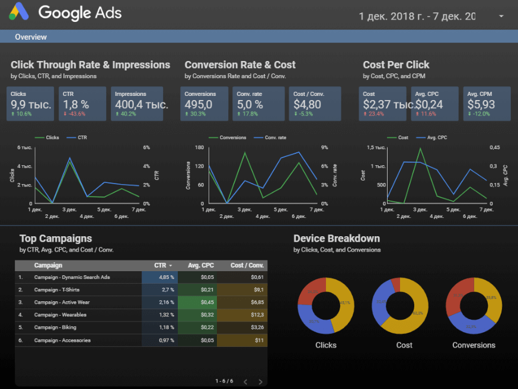

Компонентно-орієнтоване програмування
Фронтенд. Загальні концепти
З чого складається інтерфейс?
- Будь-яка сторінка — це набір візуальних блоків
- Шапка, меню, картка, кнопка, форма, футер
- Однакові блоки повторюються (список схожих карток)
- Інтерфейс = конструктор із частин
Головна проблема фронтенду
- Дані постійно змінюються. Як тримати екран синхронним?
- Прийшли нові дані — треба оновити потрібні блоки
- «Було»: вручну знайти елемент і змінити його
- Багато елементів → багато ручних оновлень → помилки
Яку проблему вирішує КОП?

Що таке компонент?
- Самостійний шматок інтерфейсу
- Містить усе своє разом: розмітку, вигляд і поведінку
- Має назву й може перевикористовуватись
- Аналогія: деталь конструктора
Композиція: складне з простого
- Малі компоненти складаються у більші
- Сторінка — це дерево компонентів
- Кнопка → Картка → Список → Сторінка
- Один компонент — багато місць
Декларативно, а не імперативно
- Імперативно: описуємо КОЖЕН крок «як» зробити
- Декларативно: описуємо ЩО має бути на екрані
- Аналогія: «відвези додому» vs покрокова навігація
- Ми описуємо результат — решту робить фреймворк
Реактивність
- Змінилися дані → інтерфейс оновлюється сам
- DOM вручну не чіпаємо
- Джерело правди — дані; UI це їх відображення
- UI = функція від даних
Як це працює під капотом (оглядово)
- Фреймворк сам вираховує, що саме змінилось
- Оновлює лише потрібні частини екрана
- Мета — швидко й плавно (бажано 60fps)
- Деталі (Virtual DOM) — наступна лекція
Задачі КОП та фронтенд
- Трансформація даних у розмітку
- Перемальовування при зміні даних
- Open source екосистема (система бібліотек)
Принципи КОП та фронтенд
- Декларативність
- Контроль даних, а не розмітки
- Базується на компонентах
Екосистема: три типи рішень
- Фреймворк — задає повний каркас і правила
- Бібліотека — вирішує одну задачу, збираєш сам
- Підхід — спосіб мислення, а не інструмент
Екосистема: приклади
- Angular — фреймворк
- React, SolidJS — бібліотеки
- Vue — фреймворк
- Svelte — компілятор
- htmx — підхід
Що запамʼятати
- Інтерфейс будуємо з компонентів
- Описуємо ЩО показати, а не ЯК
- Змінюються дані → UI оновлюється сам
- Далі: props, state, потік даних, Virtual DOM